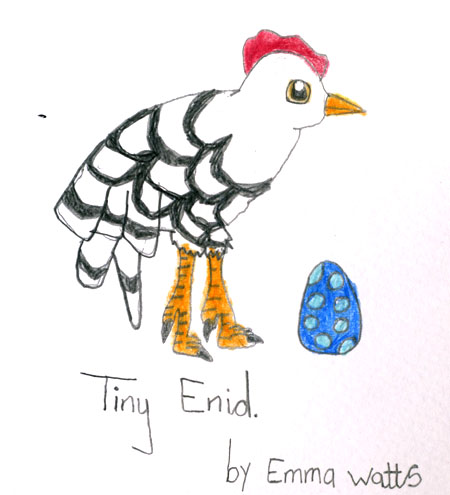

Thursday, December the 18th, 2008
back to: title, date or indexes
Over at Mustard Plaster, Miss Hathorn has posted a portrait of her hen, sensibly named after everybody's favourite plucky infant adventuress. In a less vapid world, Emma Watts would be a shoo-in for the Turner Prize rather than one of those Hoxton chancers.
